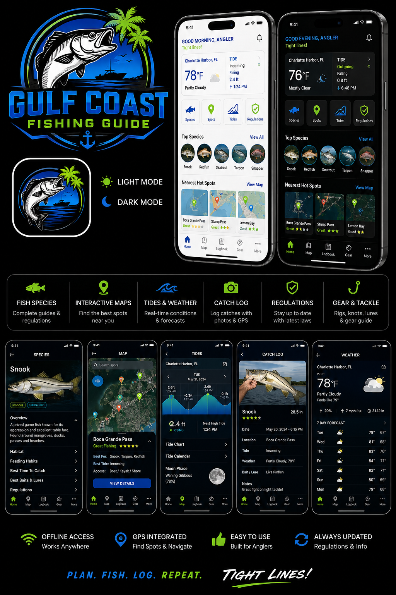

VISUAL FIELD GUIDESee it.
See it.
Rig it.
Fish it.
Learn what productive water looks like, what lives there, exactly what to tie on, and where to cast.

Top targets
Learn these habitats
Before keeping fish: verify current FWC regulations and local access/closure information.
Fish + complete tackle plan
Tap a species for multiple reference images, rod/reel, braid, leader, hook, bait and net guidance.
Read the Water
Start with the local illustration, then compare the two real examples. This is designed to train your eye.
Where to Fish + what to bring
Rig + Knot School
Free-line
BRAID ━ LEADER ━ CIRCLE HOOK ━ LIVE BAITSnook, redfish, snapper.
Popping cork
BRAID ━ CORK ━ 18–36" LEADER ━ HOOK/JIG ━ SHRIMPTrout and redfish over grass.
Fish-finder
BRAID ━ SLIDING SINKER ━ SWIVEL ━ LEADER ━ CIRCLEBeach and deeper-current bottom fishing.
Knocker rig
BRAID ━ LEADER ━ EGG WEIGHT ━ CIRCLESnapper and structure.
Weedless paddletail
BRAID ━ LEADER ━ 3/0–4/0 WEIGHTED EWG + PLASTICGrass, mangroves, redfish/snook.
Jig head
BRAID ━ LEADER ━ 1/8–3/8 OZ JIG + PADDLTAILUse the lightest weight that reaches the zone.
Video instruction
Handle With Care
Existing injury examples are retained; no new graphic injury images were added.